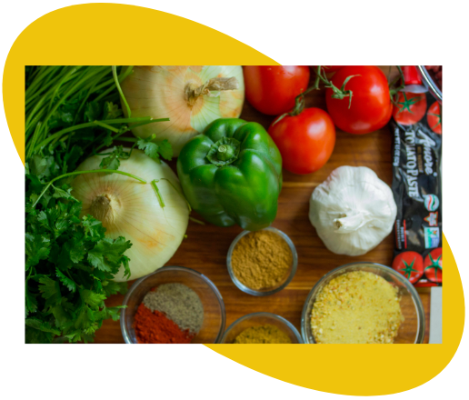

VIVE SANO Y FELIZ
CUIDADOS PARA LA PIEL
¿No tienes tiempo para el cuidado intensivo de la piel? Todavía puedes mimarte siguiendo los conceptos básicos. Un buen cuidado de la piel y elegir un estilo de vida saludable pueden ayudarte a retrasar el envejecimiento natural y prevenir diversos problemas de la piel. Comienza con estos cinco consejos sensatos.
Una de las formas más importantes para cuidar la piel es protegerla del sol. Una vida de exposición al sol puede provocar arrugas, manchas de la edad y otros problemas de la piel,
así como un aumento del riesgo de cáncer de piel.
Para obtener la protección solar más completa:
Fumar le da a tu piel un aspecto avejentado y contribuye a la formación de arrugas. Fumar estrecha los pequeños vasos sanguíneos que se encuentran en las capas más superficiales de la piel,
lo que disminuye el flujo sanguíneo y da un aspecto más pálido a la piel. Esto también elimina el oxígeno y los nutrientes que son importantes para la buena salud de la piel.
Fumar también daña el colágeno y la elastina, las fibras que le aportan fortaleza y elasticidad a la piel. Además, las expresiones faciales reiteradas que haces cuando fumas, por ejemplo,
fruncir los labios al inhalar y entrecerrar los ojos para exhalar el humo, pueden contribuir a la formación de arrugas.
Además, fumar aumenta el riesgo de carcinoma espinocelular. Si fumas, dejar de hacerlo es la mejor manera de protegerte la piel. Pídele a tu médico consejos o tratamientos que te ayuden a dejar de fumar.
El estrés no controlado puede hacer que la piel se vuelva más sensible y provocar brotes de acné y otros problemas de la piel. Para fomentar una piel sana —y un estado de ánimo saludable—, toma medidas para controlar el estrés. Duerme lo suficiente, establece límites razonables, acorta tu lista de tareas pendientes y tómate el tiempo para hacer las cosas que disfrutas. Los resultados pueden ser más notorios de lo que esperas.
La limpieza y el afeitado diarios pueden perjudicarte la piel. Para tratarla con suavidad:
Una dieta saludable puede ayudarte a que te veas y sientas de la mejor manera posible. Come frutas, vegetales, cereales integrales y proteínas magras en cantidades abundantes. La relación entre la dieta y el acné no es clara; sin embargo, de acuerdo con algunas investigaciones, una dieta con alto contenido de aceite de pescado o de suplementos de aceite de pescado y con bajo contenido de grasas no saludables y de carbohidratos procesados o refinados podría promover una piel con un aspecto más juvenil. Beber mucha agua ayuda a mantener la piel hidratada.
MI ALIMENTACIÓN
Los cambios de rutina y las visitas a restaurantes que aumentan durante las vacaciones pueden repercutir de forma negativa en nuestra dieta. ¿Qué debemos comer en los meses de verano? ¿Qué alimentos están prohibidos en esta época del año? “La respuesta no se reduce a una, sino que tiene diferentes matices en función de cada persona y sus hábitos”, explica María José Tapia, miembro del área de Nutrición de la Sociedad Española de Endocrinología y Nutrición (SEEN):
Esta especialista recuerda que es fundamental una adecuada hidratación y, por ello, se debe incrementar la ingesta de agua así como de frutas y hortalizas que podemos tomar en forma de gazpacho o sopas frías.
“Podría resumirse en utilizar el aceite de oliva como principal grasa de adición, consumir diariamente frutas, verduras, pan y otros alimentos procedentes de cereales (pasta, arroz y especialmente sus productos integrales) o legumbres, moderar la ingesta de carnes rojas y procesadas sustituyéndolas por pescados y huevos; promover la ingesta de alimentos poco procesados y prescindir de los dulces y los pasteles”, enumera Tapia. En su opinión, este patrón nutricional debe mantenerse por sus beneficios para la salud como la prevención de la obesidad y las enfermedades cardiovasculares.
En esta época hay muchas frutas y hortalizas que, además de hidratarnos, son muy bajas en calorías. A media mañana y a media tarde son buenos momentos para tomar piezas de fruta como porciones de sandía o melón que a pesar de su sabor dulce son bajas en azúcares añadidos y aptas para personas con diabetes.
Para controlar el peso deben evitarse completamente las bebidas que aporten calorías como el alcohol, los refrescos azucarados e incluso aquellas etiquetadas como productos sin alcohol. En cambio, la SEEN sugiere sustituirlas por agua e infusiones.
Se aconseja tomar más raciones de pescado que de carne a la semana, sobre todo, limitar los platos con carne roja. En concreto, se recomienda tomar pescado cinco o seis veces de las cuales al menos tres deberían ser de pescado azul.
Hay que intentar no excederse con la cantidad de comida y huir de las comidas copiosas. “Debemos controlar la ingesta de aquellos alimentos que, aun siendo saludables, aportan muchas calorías si se toman en exceso como los frutos sexos, las legumbres, la pasta o el arroz”, apunta Tapias.
Para no incrementar el aporte calórico, la forma de elaboración de los platos debe ser sencilla. Tomar las verduras crudas, por ejemplo, es la mejor forma de aprovechar todas sus vitaminas y minerales.
La SEEN indica que no es necesario eliminarlas pero sí reducir las cantidades e incorporarla a la dieta a través del aceite de oliva. Además, la forma de cocinar condiciona de manera directa su consumo, por eso, es mejor optar por elaboraciones a la plancha, en su jugo o cocido.
Se recomienda tomarlos de forma puntual y conociendo su composición nutricional. En el caso de los postres o los tentempiés, mejor sustituir los helados por fruta o postres lácteos. Los expertos recuerdan que tanto los dulces como los helados no son alimentos fundamentales en una dieta equilibrada.
Para no aumentar de peso es importante realizar actividad física moderada o suave al menos cuatro o cinco veces a la semana. Con el buen tiempo, se puede aprovechar para hacer deporte al aire libre pero evitando siempre las horas centrales del día.
ACTIVANDO MI SALUD FÍSICA
Llevar una vida activa en la infancia y adolescencia favorece el crecimiento y la aceptación del cuerpo. En la gente joven y adulta mejora la salud física y mental y en las personas mayores favorece el envejecimiento saludable. Incorpora a tu vida cotidiana algunas actividades sencillas como caminar, subir escaleras, correr, jugar, bailar, montar en bicicleta, nadar, etc. Estas actividades nos ayudan a sentirnos bien y mejoran nuestra salud.
Para saber qué tipo de actividad física necesitamos, debemos pararnos a pensar cómo de activos somos en este momento, cuánto tiempo permanecemos sentados en un lugar y cuál es nuestra condición física.
Es primordial incorporar de manera regular a nuestra vida diaria las actividades físicas que son beneficiosas para nuestra salud, y sobre todo, aquellas que nos resulten satisfactorias.
Durante nuestros desplazamientos, es conveniente acostumbrarnos a ir caminado, ir en bicicleta, utilizar las escaleras, bajar una parada antes de nuestro destino del autobús o del metro.
Si realizamos un trabajo sedentario es recomendable levantarnos, estirarnos y movernos de 1 a 3 minutos cada hora, haciendo activos nuestros descansos.
La práctica de la actividad física beneficiosa para nuestra salud incluye la realización de los siguientes tipos de ejercicios dependiendo de nuestra condición física y edad:
Infancia y adolescencia
El ejercicio físico favorece otros hábitos de vida saludable y, si se adquiere durante la niñez, es más fácil que se mantenga toda la vida.
¿Qué podemos hacer como padres?
Algunas recomendaciones para promover la práctica de ejercicio y deporte en tus hijos:
Personas adultas
Siempre hay un tipo de ejercicio que tú puedes realizar: